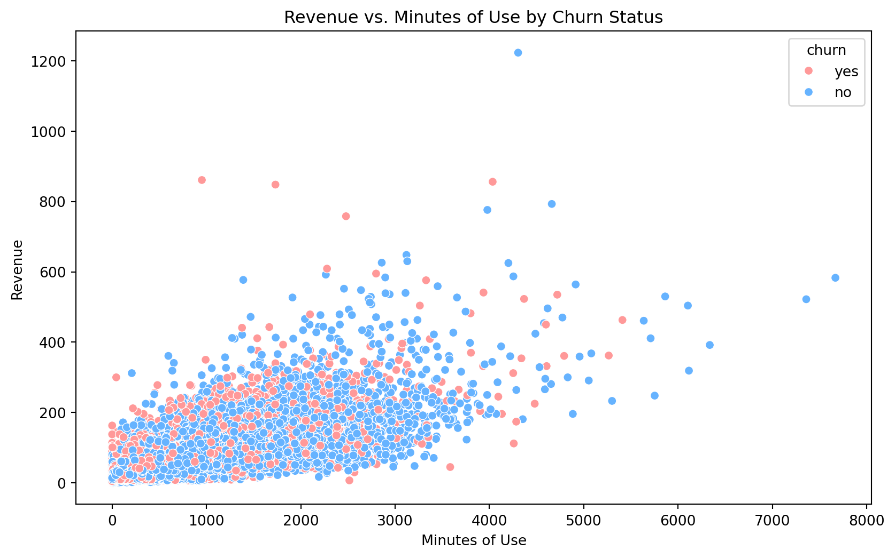

Total record
69,000
Retaining Customer
20,100
Exit Customers
48,900
Current churn rate
20%
Customer Care Calls by Churn Status

Refurbished Status by Churn Rate

Correlation Heatmap

Revenue vs. Minutes of Use with Churn Status

Summary Statistics
| Metric | Value | |
|---|---|---|
| 0 | Total Customers | 69000.000000 |
| 1 | Churned Customers | 0.000000 |
| 2 | Non-Churned Customers | 0.000000 |
| 3 | Churned Percentage | 0.000000 |
| 4 | Non-Churned Percentage | 0.000000 |
| 5 | Mean Revenue | 56.959203 |
| 6 | Median Revenue | 46.000000 |
| 7 | Revenue Std Dev | 43.439200 |
| 8 | Mean MOU | 525.822290 |
| 9 | Median MOU | 366.000000 |
| 10 | MOU Std Dev | 530.024730 |
| 11 | Mean Overage | 64.076725 |
| 12 | Median Overage | 40.000000 |
| 13 | Overage Std Dev | 68.671857 |
| 14 | Mean Roaming Calls | 1.195493 |
| 15 | Median Roaming Calls | 0.000000 |
| 16 | Roaming Calls Std Dev | 9.083502 |
| 17 | Mean Conference Calls | 0.276275 |
| 18 | Median Conference Calls | 0.000000 |
| 19 | Conference Calls Std Dev | 1.173325 |
| 20 | Mean Customer Care Calls | 2.377652 |
| 21 | Median Customer Care Calls | 0.000000 |
| 22 | Customer Care Calls Std Dev | 4.253015 |
| 23 | Mean Retention Calls | 0.035290 |
| 24 | Median Retention Calls | 0.000000 |
| 25 | Retention Calls Std Dev | 0.201412 |
| 26 | Mean Dropped Calls | 2.986913 |
| 27 | Median Dropped Calls | 2.000000 |
| 28 | Dropped Calls Std Dev | 4.539006 |
| 29 | Percentage with Refurbished Devices | 0.000000 |
| 30 | Percentage with Smartphones | 0.000000 |
| 31 | Percentage with High Credit Rating | 0.000000 |
| 32 | Percentage with Motorcycles | 0.000000 |
| 33 | Percentage with Cars | 0.000000 |
| 34 | Percentage with International Travel | 0.000000 |
| churn | changer | changem | revenue | mou | overage | roam | conference | months | uniqsubs | custcare | retcalls | dropvce | eqpdays | refurb | smartphone | highcreditr | mcycle | car | travel | region | occupation | training | representative |
|---|---|---|---|---|---|---|---|---|---|---|---|---|---|---|---|---|---|---|---|---|---|---|---|
|
Loading ITables v2.0.1 from the internet...
(need help?) |